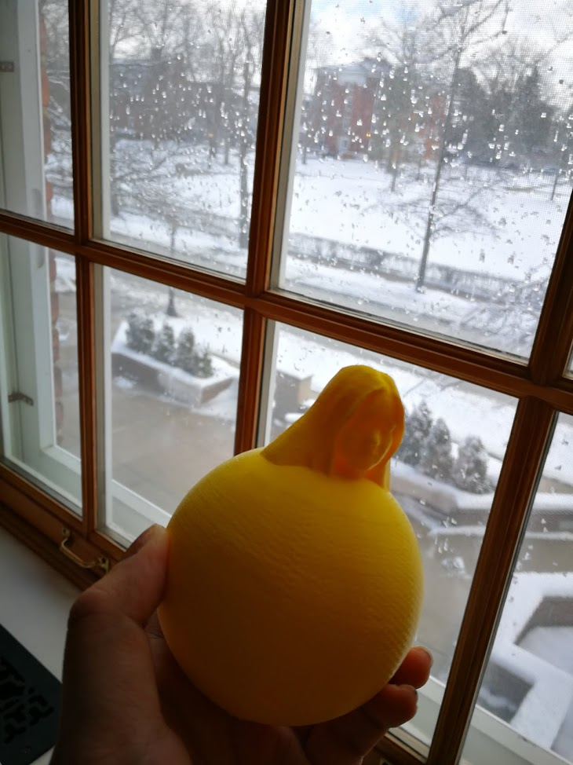

I let my friend scan me and upload the scanned file to the computer. I used meshmixer to fix some problems of the scan. For example. "Solidify" eliminates the hole on my head and "drag" and "smooth" makes the outline more natural and smoother.
Next, I combine a sphere with my head. I intended to make it as a pedastal base but it cannot stand. I hope that I can alter the density when I a 3D modeling, so that I can make my sphere stand.

It turns off to be pretty cool.
Design rules and limitations for the MakerBot Replicator 5th Gen printers